주택관리사보-2차 (2014-10-04 기출문제)
1과목: 주택관리관계법규
1. 주택법상 용어의 정의로서 옳은 것은?
- “국민주택”이란 국민주택기금으로부터 자금을 지원받아 건설되는 주택으로서 주택의 규모가 수도권정비계획법상 수도권을 제외한 도시지역이 아닌 읍 또는 면 지역을 포함하여 주거의 용도로만 쓰이는 면적이 1호(戶) 또는 1세대당 85제곱미터 이하인 주택을 말한다.
- “민간건설 중형국민주택”이란 국민주택 중 국가ㆍ지방자치단체ㆍ한국토지주택공사 또는 지방공사 외의 사업주체가 건설하는 주거전용면적이 85제곱미터를 초과하는 주택을 말한다.
- “민영주택”이란 국민주택등을 제외한 주택을 말한다.
- “도시형 생활주택”이란 300세대 이상의 국민주택규모에 해당하는 주택을 말한다.
- “건강친화형 주택”이란 건강하고 쾌적한 실내환경의 조성을 위하여 이산화탄소 배출량을 저감할 수 있도록 건설된 주택을 말한다.
(정답률: 알수없음)

2. 주택법령상 주택종합계획의 수립시 포함되어야 할 사항으로 명시된 것을 모두 고른 것은?
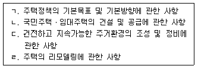
- ㄱ, ㄴ, ㄷ
- ㄱ, ㄴ, ㄹ
- ㄱ, ㄷ, ㄹ
- ㄴ, ㄷ, ㄹ
- ㄱ, ㄴ, ㄷ, ㄹ
(정답률: 알수없음)
3. 주택법령상 주택조합에 관한 설명으로 옳지 않은 것은?
- 관할 시장ㆍ군수ㆍ구청장의 인가를 받아 설립된 리모델링주택조합은 그 리모델링 결의에 찬성하지 아니하는 자의 주택 및 토지에 대하여 매도청구를 할 수 있다.
- 국가 또는 지방자치단체는 그가 소유하는 토지를 매각할 때 인가를 받아 설립된 주택조합이 주택의 건설을 목적으로 그 토지의 매수를 원하는 자가 있으면 그에게 우선적으로 그 토지를 매각할 수 있다.
- 국민주택을 공급받기 위하여 직장주택조합을 설립하려는 자는 관할 시장ㆍ군수ㆍ구청장에게 신고하여야 한다.
- 시장ㆍ군수ㆍ구청장은 주택조합 또는 그 조합의 구성원이 주택법 또는 주택법에 따른 명령이나 처분을 위반한 경우에는 주택조합의 설립인가를 취소할 수 있다.
- 주택조합은 회계감사를 받아야 하는데, 이때 회계감사를 실시한 자는 회계감사 종료일부터 15일 이내에 회계감사결과를 관할 시ㆍ도지사에게 통보하여야 한다.
(정답률: 알수없음)
4. 주택법령상 간선시설에 관한 설명으로 옳은 것은?
- “간선시설”이란 도로ㆍ상하수도ㆍ전기시설ㆍ가스시설ㆍ통신시설 등 주택단지 안의 기간시설을 그 주택단지 밖에 있는 같은 종류의 기간시설에 연결시키는 시설을 말한다. 다만, 도로ㆍ상하수도ㆍ전기시설의 경우에는 주택단지 안의 기간시설을 포함한다.
- 사업계획승인권자는 사업계획을 승인할 때 사업주체가 제출하는 사업계획에 해당 주택건설사업 또는 대지조성사업과 직접적으로 관련이 없는 공공청사 등의 용지의 기부채납이나 간선시설 등의 설치에 관한 계획을 포함하도록 요구하여서는 아니 된다.
- 사업주체가 대통령령으로 정하는 호수 이상의 주택건설사업을 시행하는 경우에 간선시설로서 지역난방시설의 설치의무자는 지방자치단체이다.
- 지방자치단체가 간선시설의 설치의무자인 경우에는 도로 및 상하수도시설의 설치비용의 전부를 국가가 보조할 수 있다.
- 시장ㆍ군수ㆍ구청장은 간선시설의 설치가 필요한 일정한 규모 이상의 주택건설 또는 대지조성에 관한 사업계획을 승인한 때에는 지체 없이 간선시설 설치의무자를 사업주체에게 통지하여야 한다.
(정답률: 알수없음)
5. 주택법상 과태료 부과사유에 해당하지 않는 것은?
- 입주자대표회의 및 관리주체가 장기수선충당금을 주택법에 따른 용도 외의 목적으로 사용한 경우
- 입주자대표회의등이 하자보수보증금을 주택법에 따른 용도 외의 목적으로 사용한 경우
- 사업주체가 입주자대표회의로부터 주택관리업자의 선정을 통지받고 대통령령으로 정하는 기간 이내에 해당 관리주체에게 공동주택의 관리업무를 인계하지 않은 경우
- 500세대 이상의 공동주택을 관리하는 주택관리업자가 주택관리사를 해당 공동주택의 관리사무소장으로 배치하지 않은 경우
- 300세대 이상인 공동주택의 입주자가 입주자대표회의를 구성하고 시장ㆍ군수ㆍ구청장에게 신고를 하지 않은 경우
(정답률: 알수없음)
6. 주택법령상 주택건설사업에 관한 설명으로 옳은 것은?
- 주택건설사업을 시행하려는 자는 해당 주택단지를 공구별로 분할하여 주택을 건설ㆍ공급할 수 없다.
- 승인받은 사업계획의 내용 중 건축물이 아닌 부대시설 및 복리시설의 설치기준을 변경하고자 할 때, 해당 부대시설 및 복리시설 설치기준 이상으로의 변경이며 위치변경이 없는 경우에도 변경승인을 받아야 한다.
- 국민주택기금을 지원받은 사업주체가 사업주체를 변경하기 위하여 사업계획의 변경승인을 신청한 경우에는 기금수탁자의 사업주체 변경에 관한 동의서를 첨부하여야 한다.
- 대지조성사업으로서 해당 대지면적이 10만 제곱미터 미만인 경우 국토교통부장관 또는 시ㆍ도지사에게 사업계획승인을 받아야 한다.
- 지방공사가 주택건설사업계획의 승인을 받으려면 해당 주택건설대지의 소유권을 확보하여야 한다.
(정답률: 알수없음)
7. 주택법령상 주택의 관리에 관한 설명으로 옳지 않은 것은?
- 입주자대표회의는 사용검사일부터 10년이 경과하면 하자보수보증금을 일시에 반환하여야 한다.
- 입주자등은 공동주택에 광고물ㆍ표지물 또는 표지를 부착하는 행위를 하려는 경우에는 관리주체의 동의를 받아야 한다.
- 관리주체는 장기수선충당금을 해당 주택의 소유자로부터 징수하여 적립하여야 한다.
- 승강기가 설치된 공동주택을 건설ㆍ공급하는 사업주체는 그 공동주택의 공용부분에 대한 장기수선계획을 수립하여야 한다.
- 공동주택 중 분양되지 아니한 세대의 장기수선충당금은 사업주체가 이를 부담하여야 한다.
(정답률: 알수없음)
8. 주택법령상 주택자금에 관한 설명으로 옳은 것은?
- 국민주택기금은 기획재정부장관이 운용ㆍ관리하며 기금수탁자에게 위탁할 수 있다.
- 국민주택채권은 국토교통부장관의 요청에 따라 기획재정부장관이 발행한다.
- 주택상환사채를 발행하려는 자는 주택상환사채발행계획을 수립하여 기획재정부장관의 승인을 받아야 한다.
- 등록사업자의 등록이 말소된 경우 등록사업자가 발행한 주택상환사채의 효력에 영향을 미친다.
- 주택상환사채는 무기명증권으로 한다.
(정답률: 알수없음)
9. 건축법상 용어의 정의로서 옳지 않은 것은?
- “건축”이란 건축물을 신축ㆍ증축ㆍ개축ㆍ재축(再築)하거나 건축물을 이전하는 것을 말한다.
- “건축물의 용도”란 건축물의 종류를 유사한 구조, 이용 목적 및 형태별로 묶어 분류한 것을 말한다.
- “거실”이란 건축물 안에서 거주, 집무, 작업, 집회, 오락, 그 밖에 이와 유사한 목적을 위하여 사용되는 방을 말한다.
- “지하층”이란 건축물의 바닥이 지표면 아래에 있는 층으로서 바닥에서 지표면까지 평균높이가 해당층 높이의 2분의 1 이상인 것을 말한다.
- “공사감리자”란 자기의 책임으로 설계도서를 작성하고 그 설계도서에서 의도하는 바를 해설하며, 지도하고 자문에 응하는 자를 말한다.
(정답률: 알수없음)
10. 건축법령상 건축신고 대상인 대수선에 해당하지 않는 것은?
- 주요구조부의 해체 없이 내력벽의 면적을 20제곱미터 수선하는 것
- 주요구조부의 해체 없이 기둥을 세 개 수선하는 것
- 주요구조부의 해체 없이 보를 세 개 수선하는 것
- 주요구조부의 해체 없이 지붕틀을 세 개 수선하는 것
- 주요구조부의 해체 없이 방화벽을 수선하는 것
(정답률: 알수없음)
11. 건축법령상 건축관계자가 허가권자에게 건축법 기준을 완화하여 적용할 것을 요청할 수 있다. 이 경우 사용승인을 받은 후 15년 이상이 되어 리모델링이 필요한 건축물에 완화하여 적용하는 기준에 해당하지 않는 것은?
- 건축물의 내화구조와 방화벽
- 대지의 조경
- 건축선의 지정
- 건축물의 용적률
- 건축물의 건폐율
(정답률: 알수없음)
12. 건축법령상 제2종 근린생활시설에 해당하는 것은?
- 미용원
- 독서실
- 마을회관
- 변전소
- 의원
(정답률: 알수없음)
13. 임대주택법령상 토지임대부 임대주택에 관한 설명으로 옳지 않은 것은?
- “토지임대부 임대주택”이란 임대사업자가 토지를 임차하여 건설ㆍ임대하는 주택을 말한다.
- 토지임대부 임대주택의 토지의 임대차 관계는 토지소유자와 임대사업자 간의 임대차계약에 따른다.
- 임대사업자가 토지소유자와 토지임대차계약을 체결한 경우 해당 토지임대부 임대주택의 소유권을 목적으로 그 토지 위에 임대차계약에 따른 임대기간 동안 지상권이 설정된 것으로 본다.
- 토지임대부 임대주택을 분양전환하는 경우, 임대사업자가 임대의무기간 경과 후 6개월 이상 분양전환승인을 신청하지 아니하는 경우에는 임차인은 임차인 총수의 과반수의 동의를 받아 직접 분양전환승인을 신청할 수 있다.
- 토지임대부 임대주택이 민간건설임대주택인 경우, 해당 토지임대부 임대주택의 분양전환 가격은 당사자 간의 협의로 정한다.
(정답률: 알수없음)
14. 임대주택법령상 임대주택의 임대 조건 등에 관한 설명으로 옳은 것을 모두 고른 것은?
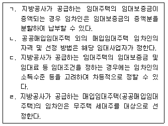
- ㄱ, ㄷ
- ㄴ, ㄹ
- ㄱ, ㄷ, ㄹ
- ㄴ, ㄷ, ㄹ
- ㄱ, ㄴ, ㄷ, ㄹ
(정답률: 알수없음)
15. 임대주택법령상 임대사업자에 관한 설명으로 옳지 않은 것은?
- “임대사업자”란 국가, 지방자치단체, 한국토지주택공사, 지방공사, 주택임대사업을 하기 위하여 등록한 자 또는 임대주택조합을 말한다.
- 국토교통부장관은 임대사업자가 준공공임대주택을 개량하는 경우 이를 위한 비용의 전부 또는 일부를 주택법에 따른 국민주택기금에서 융자 지원할 수 있다.
- 등록한 임대사업자가 등록한 사항을 변경하려면 국토교통부령으로 정하는 경미한 사항 외에는 시장ㆍ군수ㆍ구청장에게 신고하여야 한다.
- 지방공사가 임대주택을 건설한 경우 임대보증금에 관한 보증에 가입하여야 한다.
- 임대보증금에 대한 보증에 가입하여야 하는 임대사업자로서 보증에 가입하지 아니한 자는 3년 이하의 징역 또는 3천만원 이하의 벌금에 처한다.
(정답률: 알수없음)
16. 도시 및 주거환경정비법령상 조합의 이사에 관한 설명으로 옳지 않은 것은?
- 조합에 두는 이사의 수는 3명 이상으로 한다. 다만, 토지등소유자가 100명을 초과하는 경우에는 이사의 수를 5명 이상으로 한다.
- 도시 및 주거환경정비법을 위반하여 벌금 100만원 이상의 형을 선고받고 5년이 지나지 아니한 자는 이사가 될 수 없다.
- 조합은 총회 의결을 거쳐 이사의 선출에 관한 선거관리를 선거관리위원회법에 따른 선거관리위원회에 위탁할 수 있다.
- 조합장 또는 이사의 자기를 위한 조합과의 계약이나 소송에 관하여는 감사가 조합을 대표한다.
- 조합원의 발의로 이사해임을 위한 총회가 소집된 경우 그 소집 및 진행에 있어 감사는 조합장의 권한을 대행하여야 한다.
(정답률: 알수없음)
17. 도시 및 주거환경정비법령상 도시ㆍ주거환경정비기본계획에 관한 설명으로 옳지 않은 것은?
- 특별시장ㆍ광역시장ㆍ특별자치시장ㆍ특별자치도지사 또는 시장은 기본계획에 대하여 5년마다 타당성 여부를 검토하여야 한다.
- 대도시가 아닌 경우 도지사가 기본계획의 수립이 필요하다고 인정하는 시를 제외하고 기본계획을 수립하지 아니할 수 있다.
- 특별시장ㆍ광역시장ㆍ특별자치시장ㆍ특별자치도지사 또는 시장은 기본계획 수립시 중앙도시계획위원회의 심의를 거쳐야 한다.
- 특별시장ㆍ광역시장ㆍ특별자치시장ㆍ특별자치도지사 또는 시장이 수립하는 기본계획에는 역사적 유물 및 전통건축물의 보존계획이 포함된다.
- 대도시의 시장이 아닌 시장은 기본계획을 수립 또는 변경한 때에는 도지사의 승인을 얻어야 한다.
(정답률: 알수없음)
18. 도시재정비 촉진을 위한 특별법에 관한 내용으로 옳은 것은?
- 우선사업구역의 재정비촉진사업은 관계 법령에도 불구하고 토지등소유자의 3분의 1이상의 동의를 받아 시장ㆍ군수ㆍ구청장이 직접 시행하여야 한다.
- 재정비촉진구역이 10곳 이상인 경우 사업협의회는 20인 이내의 위원으로 구성한다.
- 한국토지주택공사가 사업시행자로 지정된 경우 시공사는 주민대표회의가 선정한다.
- 재정비촉진계획 수립권자는 재정비촉진계획 수립단계에서부터 한국토지주택공사 또는 지방공사를 총괄사업관리자로 지정할 수 있다.
- 주민대표회의가 시공사를 선정할 경우 경쟁입찰의 방법으로 하여야 하나 1회 유찰되면 수의계약의 방법으로 한다.
(정답률: 알수없음)
19. 소방기본법령상 화재예방, 소방활동 또는 소방훈련을 위하여 사용되는 소방신호의 종류로 명시되지 않은 것은?
- 예비신호
- 훈련신호
- 발화신호
- 경계신호
- 해제신호
(정답률: 알수없음)
20. 소방기본법령상 특별시ㆍ광역시 또는 도의 소방본부에 설치된 종합상황실의 실장이 소방방재청의 종합상황실에 서면ㆍ모사전송 또는 컴퓨터통신 등으로 지체 없이 보고하여야 하는 상황에 해당하는 것을 모두 고른 것은?
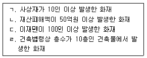
- ㄱ, ㄴ, ㄷ
- ㄱ, ㄴ, ㄹ
- ㄱ, ㄷ, ㄹ
- ㄴ, ㄷ, ㄹ
- ㄱ, ㄴ, ㄷ, ㄹ
(정답률: 알수없음)
21. 소방시설 설치ㆍ유지 및 안전관리에 관한 법령상 연소(延燒)우려가 있는 건축물의 구조에 관한 내용이다. ( )안에 들어갈 내용이 순서대로 옳은 것은?
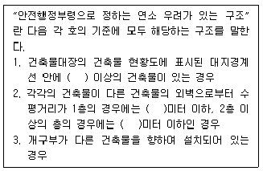
- 둘, 5, 10
- 둘, 6, 10
- 셋, 6, 12
- 셋, 8, 10
- 셋, 8, 12
(정답률: 알수없음)
22. 승강기시설 안전관리법령상 승객용 승강기의 종류에 해당하지 않는 것은?
- 덤웨이터
- 전망용 엘리베이터
- 소형 엘리베이터
- 피난용 엘리베이터
- 비상용 엘리베이터
(정답률: 알수없음)
23. 승강기시설 안전관리법령에 관한 내용으로 옳은 것은?
- 승강기 유지관리업자가 그 업무를 수행하면서 고의 또는 과실로 타인에게 손해를 입힌 경우 그 손해에 대한 배상을 보장하기 위하여 가입하는 보험은 임의보험이다.
- 시ㆍ도지사는 승강기 유지관리업자가 거짓이나 그 밖의 부정한 방법으로 유지관리업에 등록한 경우 6개월 이내의 기간을 정하여 그 사업의 전부 또는 일부의 정지를 명할 수 있다.
- 정밀안전검사에 불합격한 승강기인 경우 임시적으로 3개월까지 운행할 수 있다.
- 승강기 검사 연기를 받은 자는 그 연기 사유가 없어진 날부터 5일 이내에 승강기 검사 신청을 하여야 한다.
- 관리주체가 직접 승강기를 관리하더라도 승강기 운행에 대한 지식이 풍부한 자를 안전관리자로 선임하여 해당 승강기를 관리하도록 하여야 한다.
(정답률: 알수없음)
24. 전기사업법령상 발전사업자 및 전기판매사업자가 전기의 공급을 거부할 수 있는 사유에 해당하지 않는 것은?
- 전기요금을 납기일까지 납부하지 아니한 전기사용자가 공급약관에서 정하는 기한까지 해당 요금을 내지 아니하는 경우
- 전기사용자가 표준전압 또는 표준주파수 외의 전압 또는 주파수로 전기의 공급을 요청하는 경우
- 전기의 공급을 요청하는 자가 불합리한 조건을 제시하거나 전기판매사업자의 정당한 조건에 따르지 아니하고 다른 방법으로 전기의 공급을 요청하는 경우
- 다른 법률에 따라 시ㆍ도지사 또는 그 밖의 행정기관의 장이 전기공급의 정지를 요청하는 경우
- 전기를 대량으로 사용하려는 자가 사용예정일 4년 전에 용량 10만킬로와트 이상 30만킬로와트 미만의 전기를 사업자에게 요청하는 경우
(정답률: 알수없음)
25. 전기사업법령상 산업통상자원부장관이 전력산업기반조성사업을 실시하려는 경우 주관기관의 장과 체결하는 협약에 포함되어야 할 사항으로 명시된 것은?
- 전력산업전문인력의 양성에 관한 사항
- 필요한 자금 및 자금 조달계획
- 사업시행의 결과 보고 및 그 결과의 활용에 관한 사항
- 전력 분야의 연구기관 및 단체의 육성ㆍ지원에 관한 사항
- 전력수요 관리사업에 관한 사항
(정답률: 알수없음)
2과목: 공동주택관리실무
26. 시설물의 안전관리에 관한 특별법령상 시설물의 유지관리에 관한 설명으로 옳지 않은 것은?
- 민간관리주체는 시설물의 보수ㆍ보강 등 대통령령으로 정하는 유지관리 실적이 있으면 해당 실적을 관할 시장ㆍ군수ㆍ구청장 및 시ㆍ도지사를 거쳐 국토교통부장관에게 제출하여야 한다.
- 관리주체는 하자담보책임기간 내에는 그 시설물을 시공한 자로 하여금 유지관리하게 할 수 있다.
- 시설물의 유지관리에 드는 비용은 관리주체가 부담한다.
- 100세대의 공동주택인 경우 관리주체가 직접 유지관리하거나 유지관리업자로 하여금 유지관리하게 할 수 있다.
- 시설물의 유지관리업무를 성실하게 수행하지 아니함으로써 시설물에 중대한 손괴를 야기하여 공중의 위험을 발생하게 한 자에게는 1억원 이하의 과태료를 부과한다.
(정답률: 알수없음)
27. 시설물의 안전관리에 관한 특별법의 내용으로 옳은 것은?
- 민간관리주체가 시설물의 사용제한ㆍ사용금지ㆍ철거 등의 조치를 하는 경우에는 민간관리주체가 이를 공고하여야 한다.
- 민간관리주체가 부득이한 사유로 안전점검을 실시하지 못하게 되어 시장ㆍ군수ㆍ구청장이 대신하여 안전점검을 실시한 경우, 안전점검에 드는 비용을 그 민간관리주체에게 부담하게 할 수 없다.
- 안전점검은 정기점검ㆍ정밀점검 및 긴급점검으로 구분하여 실시한다.
- 대한민국의 국민이 아닌 자도 한국시설안전공단의 임원이 될 수 있다.
- 안전점검 미실시로 인하여 형벌을 받은 자에 대하여도 과태료를 부과할 수 있다.
(정답률: 알수없음)
28. 집합건물의 소유 및 관리에 관한 법률상 관리단에 관한 설명으로 옳은 것은?
- 관리인은 구분소유자이여야 하며, 그 임기는 2년의 범위에서 규약으로 정한다.
- 관리위원회의 결의로 관리인이 선임되거나 해임되도록 규약으로 정한 경우에는 그에 따른다.
- 관리인은 관리단의 사업 시행과 관련하여 관리단을 대표하여 하는 재판상의 행위를 할 권한이 없다.
- 관리인의 대표권은 제한할 수 없다.
- 구분소유자의 특별승계인은 승계 전에 발생한 관리단의 채무에 관하여 책임을 지지 않는다.
(정답률: 알수없음)
29. 공동주거와 관련된 내용으로 옳지 않은 것은?
- 주택이 물리적인 것을 의미하는 반면, 주거는 주택에서 일어나는 경험적인 측면과 정서적인 측면을 포함하는 개념이다.
- 새집증후군은 주택이나 건물을 새로 지을 때 사용하는 건축자재나 벽지 등에서 나오는 유해물질로 인해 거주자들이 느끼는 건강상 문제 및 불쾌감을 말한다.
- 주거복지는 사회구성원인 국민 전체의 주거수준 향상으로 사회적 안정을 도모하고 복지를 증진시키는 것이다.
- 주택의 유형에는 경사진 대지에 계단식으로 건축되어 지면에서 직접 각 세대가 있는 층으로의 출입이 가능하고 위층 세대가 아래층 세대의 지붕을 정원 등으로 활용하는 주택도 있다.
- 코하우징(cohousing)은 행정과 주민이 협력하여 지역공간의 의미를 재발견하고 거기서 문화적 정체성을 찾아 도시공간의 활력을 되찾고 생활공간의 쾌적성을 높이려는 일련의 시도라고 볼 수 있다.
(정답률: 알수없음)
30. 주택법령상 세대구분형 공동주택에 관한 설명으로 옳지 않은 것을 모두 고른 것은?
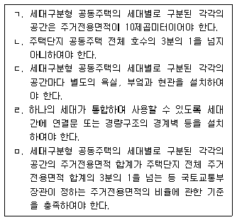
- ㄱ, ㄴ
- ㄱ, ㅁ
- ㄴ, ㄷ
- ㄷ, ㄹ
- ㄹ, ㅁ
(정답률: 알수없음)
31. 주택법 및 임대주택법상의 용어로 옳은 것은?
- “준공공임대주택”이란 국가, 지방자치단체, 한국토지주택공사 또는 주택사업을 목적으로 설립된 지방공사 등의 임대사업자가 10년 이상 계속하여 임대하는 전용면적 85제곱미터 이하의 임대주택을 말한다.
- “주택종합관리계획”이란 세대수 증가형 리모델링으로 인한 도시과밀, 이주수요 집중 등을 체계적으로 관리하기 위하여 수립하는 계획을 말한다.
- “장기전세주택”이란 국가, 지방자치단체, 한국토지주택공사 또는 주택사업을 목적으로 설립된 지방공사가 임대할 목적으로 건설 또는 매입하는 주택으로서 30년의 범위에서 전세계약의 방식으로 공급하는 임대주택을 말한다.
- “전세후 임대주택”이란 국가, 지방자치단체, 한국토지주택공사 또는 주택사업을 목적으로 설립된 지방공사가 전세계약의 방식으로 임차하여 공급하는 주택을 말한다.
- “위탁관리형 주택임대관리업”이란 임대인과 주택임대관리업자가 계약 당사자로서 주택임대관리업자는 계약기간 중 임대인에게 임대료 지불을 보장하고 자기책임으로 주택을 임대하는 형태를 말한다.
(정답률: 알수없음)
32. 주택법령상 공동주택의 관리에 관한 설명으로 옳지 않은 것은?
- 동별 대표자의 임기는 2년으로 하며, 한번만 중임할 수 있다.
- 공동주택 분양 후 최초의 관리규약은 사업주체가 제안한 내용(관리규약의 준칙에 따라 입주예정자와 관리계약을 체결할 때에 제안한 내용을 말한다)을 해당 입주예정자의 과반수가 서면으로 동의하는 방법으로 결정한다.
- 하자보수보증금을 사용하여 직접 보수하는 공사는 관리주체가 사업자를 선정하고 집행하는 사항이다.
- 관리주체가 주민운동시설을 위탁한 때에는 주민운동시설의 사용료는 주민운동시설의 위탁에 따른 수수료, 주민운동시설의 관리 비용 등의 범위에서 정하여야 한다.
- 관리규약의 준칙에는 공동주택의 어린이집 임대계약시 어린이집을 이용하는 입주자등 중 어린이집의 임대에 동의하는 비율에 관한 사항이 포함되어야 한다.
(정답률: 알수없음)
33. 주택법령상 입주자대표회의에 관한 설명으로 옳지 않은 것은?
- 동별 대표자는 관리규약으로 정한 사유가 있는 경우 해당 선거구 입주자등의 과반수가 투표하고 투표자 과반수 찬성으로 해임한다.
- 자치관리를 하는 경우 입주자대표회의 구성원 과반수의 찬성으로 자치관리기구 직원의 임면에 관한 사항을 의결한다.
- 주택의 소유자가 서면으로 위임한 대리권이 없는 소유자의 직계존비속은 동별 대표자가 될 수 없으며 그 자격을 상실한다.
- 입주자대표회의를 대표하는 자는 해당 공동주택의 입주자대표회의 구성을 신고하는 경우 입주자대표회의 구성 등 신고서에 임원 및 동별 대표자의 성명ㆍ주소ㆍ생년월일 및 약력과 그 선출에 관한 증빙서류를 포함한 입주자대표회의 구성 현황 서류를 첨부하여 시장ㆍ군수 또는 구청장에게 제출하여야 한다.
- 계약기간이 만료된 주택관리업자에 대하여 관리규약에서 정하는 절차에 따라 입주자등으로부터 사전에 해당 주택관리업자의 주택관리에 대한 만족도를 청취한 결과 입주자대표회의 구성원 과반수가 서면으로 교체를 요구한 경우에는 해당 공동주택의 관리주체 선정 입찰 참가를 제한할 수 있다.
(정답률: 알수없음)
34. 주택법령상 하자보수에 관한 설명으로 옳지 않은 것은?
- 하자의 조사는 현장실사를 통하여 하자 부위와 설계도서를 비교하여 측정하는 방법으로 한다.
- 공동주택의 하자보수비용은 실제 하자보수에 사용되는 비용으로 산정하되, 하자보수에 필수적으로 수반되는 비용을 추가할 수 있다.
- 사업주체는 하자보수를 청구받은 날부터 30일 이내에 그 하자를 보수하거나 하자 부위 등을 명시한 하자보수계획을 관리주체에 통보하여야 한다.
- 하자보수종료의 확인을 위해서는 국토교통부령으로 정하는 하자보수종료확인서에 입주자 또는 그 대리인의 서면확인서(공용부분은 전체 입주자의 5분의 4 이상의 서면확인서를 말한다)를 첨부하여야 한다.
- 입주자대표회의등이 하자보수보증금의 사용내역을 신고하려는 경우에는 하자보수보증금 사용내역 신고서에 하자보수보증금 예치증서 사본 및 하자보수보증금의 세부 사용내역서를 첨부하여 시장ㆍ군수 또는 구청장에게 제출하여야 한다.
(정답률: 알수없음)
35. 산업재해보상보험법상 심사청구에 관한 설명으로 옳지 않은 것은?
- 보험급여 결정등에 불복하는 자는 근로복지공단에 심사 청구를 할 수 있고, 심사 청구는 그 보험급여 결정등을 한 근로복지공단의 소속 기관을 거쳐 근로복지공단에 제기하여야 한다.
- 심사 청구서를 받은 근로복지공단의 소속 기관은 10일 이내에 의견서를 첨부하여 근로복지공단에 보내야 한다.
- 심사 청구를 심의하기 위하여 근로복지공단에 관계 전문가 등으로 구성되는 산업재해보상보험심사위원회를 둔다.
- 근로복지공단은 심사 청구서를 받은 날부터 60일 이내에 산업재해보상보험심사위원회의 심의를 거쳐 심사 청구에 대한 결정을 하여야 한다. 다만, 부득이한 사유로 그 기간 이내에 결정을 할 수 없으면 1차에 한하여 20일을 넘지 아니하는 범위에서 그 기간을 연장할 수 있다.
- 보험급여 결정등에 대하여는 행정심판법에 따른 행정심판을 제기할 수 없다.
(정답률: 알수없음)
36. 근로자퇴직급여 보장법령상 퇴직급여제도에 관한 설명으로 옳지 않은 것은?
- 확정급여형퇴직연금제도의 가입자는 적립금의 운용방법을 스스로 선정할 수 있고, 반기마다 1회 이상 적립금의 운용방법을 변경할 수 있다.
- 사용자가 설정된 퇴직급여제도를 다른 종류의 퇴직급여제도로 변경하려면 근로자의 과반수가 가입한 노동조합이 있는 경우에는 그 노동조합의 동의를 받아야 한다.
- 퇴직연금제도의 급여를 받을 권리는 무주택자인 가입자가 본인 명의로 주택을 구입하는 경우에 대통령령으로 정하는 한도에서 담보로 제공할 수 있다.
- 상시 10명 미만의 근로자를 사용하는 사업의 경우 사용자가 개별 근로자의 동의를 받거나 근로자의 요구에 따라 개인형퇴직연금제도를 설정하는 경우에는 해당 근로자에 대하여 퇴직급여제도를 설정한 것으로 본다.
- 사용자는 근로자가 퇴직한 경우에는 그 지급사유가 발생한 날부터 14일 이내에 퇴직금을 지급하여야 한다. 다만, 특별한 사정이 있는 경우에는 당사자 간의 합의에 따라 지급기일을 연장할 수 있다.
(정답률: 알수없음)
37. 고용보험법상의 내용으로 옳지 않은 것은?
- 고용보험 및 산업재해보상보험의 보험료징수 등에 관한 법률에 따라 보험에 가입되거나 가입된 것으로 보는 근로자는 피보험자에 해당된다.
- 피보험자가 이직하거나 사망한 경우 그 다음 날부터 피보험자격을 상실한다.
- 피보험자가 고용보험 및 산업재해보상보험의 보험료징수 등에 관한 법률에 따라 보험관계가 소멸한 경우에는 그 보험관계가 소멸한 날에 피보험자격을 상실한다.
- 이직으로 피보험자격을 상실한 자는 실업급여의 수급자격의 인정신청을 위하여 종전의 사업주에게 이직확인서의 교부를 청구할 수 있다.
- 근로자가 보험관계가 성립되어 있는 둘 이상의 사업에 동시에 고용되어 있는 경우에는 각 사업의 근로자로서의 피보험자격을 모두 취득한다.
(정답률: 알수없음)
38. 주택법령상 공동주택의 관리에 관한 설명으로 옳지 않은 것은?
- 사업주체는 입주자대표회의의 구성에 협력하여야 하며, 입주자대표회의가 관리방법을 결정하였음을 통지한 때에는 당해 입주자대표회의에 관리비예치금을 인계하여야 한다.
- 관리주체는 청소, 경비, 소독, 승강기유지, 지능형 홈네트워크, 수선ㆍ유지를 위한 용역 및 공사 사업자를 선정하는 경우에 국토교통부장관이 정하여 고시하는 경쟁입찰의 방법으로 사업자를 선정하여 집행하여야 하고, 이 경우에 입주자대표회의의 감사는 입찰과정에 참관하여야 한다.
- 시ㆍ도지사는 공동주택의 입주자 및 사용자를 보호하고 주거생활의 질서를 유지하기 위하여 대통령령으로 정하는 바에 따라 공동주택의 관리 또는 사용에 관하여 준거가 되는 공동주택관리규약의 준칙을 정하여야 한다.
- 관리규약의 개정은 입주자대표회의의 의결 또는 전체 입주자등의 10분의 1 이상이 제안하고 전체 입주자등의 과반수가 찬성하는 방법에 따른다.
- 관리규약은 입주자의 지위를 승계한 자에 대하여도 그 효력이 있다.
(정답률: 알수없음)
39. 주택법령상 공동주택의 관리에 관한 설명으로 옳지 않은 것은?
- 관리주체는 장기수선계획을 조정하기 전에 해당 공동주택의 관리사무소장으로 하여금 장기수선계획의 비용산출 및 공사방법 등에 관한 교육을 받게 할 수 있다.
- 관리주체는 해당 공동주택의 시설물로 인한 안전사고를 예방하기 위하여 대통령령으로 정하는 바에 따라 안전관리계획을 수립하고 이에 따라 시설물별로 안전관리자 및 안전관리책임자를 선정하여 이를 시행하여야 한다.
- 주택관리업자와 관리사무소장으로 배치받은 주택관리사등은 시장ㆍ군수 또는 구청장이 실시하는 주택관리에 관한 교육을 받아야 한다.
- 시장ㆍ군수 또는 구청장은 입주자대표회의의 운영 및 윤리교육을 실시하려면 교육일시, 교육장소, 교육기간, 교육내용, 교육대상자, 그 밖에 교육에 관하여 필요한 사항을 교육 실시 10일 전까지 공고하거나 대상자에게 알려야 한다.
- 관리사무소장의 직무에 관한 보수교육은 주택관리사와 주택관리사보로 구분하여 실시한다.
(정답률: 알수없음)
40. 주택법령상 주택임대관리업의 등록을 반드시 말소하여야 하는 경우는?
- 등록기준에 미달하게 된 날부터 1개월이 지날 때까지 이를 보완하지 않은 경우
- 고의 또는 과실로 임대를 목적으로 하는 주택을 잘못 관리하여 임대인 및 임차인에게 재산상의 손해를 입힌 경우
- 매년 12월 31일을 기준으로 최근 2년간 주택임대 관리실적이 없는 경우
- 국토교통부장관의 자료제출 명령을 거부ㆍ방해 또는 기피한 경우
- 최근 3년간 2회 이상의 영업정지처분을 받은 자로서 그 정지처분을 받은 기간이 합산하여 12개월을 초과한 경우
(정답률: 알수없음)
41. 주택법령상 장기수선계획에 관한 설명으로 옳지 않은 것은?
- 200세대의 지역난방방식의 공동주택을 건설ㆍ공급하는 사업주체 또는 리모델링을 하는 자는 그 공동주택의 공용부분에 대한 장기수선계획을 수립하여야 한다.
- 300세대 이상의 공동주택을 건설ㆍ공급하는 사업주체 또는 리모델링을 하는 자는 그 공동주택의 공용부분에 대한 장기수선계획을 수립하여야 한다.
- 400세대의 중앙집중식 난방방식의 공동주택을 건설ㆍ공급하는 사업주체 또는 리모델링을 하는 자는 그 공동주택의 공용부분에 대한 장기수선계획을 수립하여야 한다.
- 사업주체는 장기수선계획을 3년마다 조정하되, 주요시설을 신설하는 등 관리여건상 필요하여 입주자대표회의의 의결을 얻은 경우에는 3년이 경과하기 전에 조정할 수 있다.
- 장기수선계획을 수립하는 자는 국토교통부령이 정하는 기준에 따라 장기수선계획을 수립하되, 당해 공동주택의 건설에 소요된 비용을 감안하여야 한다.
(정답률: 알수없음)
42. 주택법령상 공동주택의 관리에 관한 설명으로 옳지 않은 것은?
- 관리주체는 입주자대표회의의 감사가 요구한 경우 사업실적서 및 결산서 등에 대하여 주식회사의 외부감사에 관한 법률상 감사인의 회계감사를 받아야 한다.
- 관리주체는 보수를 요하는 시설이 2세대 이상의 공동사용에 제공되는 것인 경우에는 이를 직접 보수하고, 당해 입주자등에게 그 비용을 따로 부과할 수 있다.
- 수선유지비에는 재난 및 재해 등의 예방에 따른 비용이 포함된다.
- 관리주체는 장기수선충당금을 관리비와 구분하여 징수하여야 한다.
- 관리주체는 해당 공동주택의 공용부분의 관리 및 운영 등에 필요한 경비를 공동주택의 소유자로부터 징수할 수 있다.
(정답률: 알수없음)
43. 밸브나 수전(水栓)류를 급격히 열고 닫을 때 압력변화에 의해 발생하는 현상은?
- 수격(water hammering)현상
- 표면장력(surface tension)현상
- 공동(cavitation)현상
- 사이펀(siphon)현상
- 모세관(capillary tube)현상
(정답률: 알수없음)
44. 건축물의 설비기준 등에 관한 규칙상 100세대 이상의 신축공동주택등의 기계환기설비 설치기준에 관한 설명으로 옳지 않은 것은?
- 공기흡입구 및 배기구와 공기공급체계 및 공기배출체계는 기계환기설비를 지속적으로 작동시키는 경우에도 대상 공간의 사용에 지장을 주지 아니하는 위치에 설치되어야 한다.
- 세대의 환기량조절을 위해서 환기설비의 정격풍량을 2단계 이상으로 조절할 수 있도록 하여야 한다.
- 기계환기설비는 주방 가스대 위의 공기배출장치, 화장실의 공기배출 송풍기 등 급속 환기 설비와 함께 설치할 수 있다.
- 에너지 절약을 위하여 폐열회수형 환기장치를 설치하는 경우에는 한국산업표준(KS B 6879)에 따라 시험한 폐열회수형 환기장치의 유효환기량이 표시용량의 90% 이상이어야 한다.
- 외부에 면하는 공기흡입구와 배기구는 교차오염을 방지할 수 있도록 1.5미터 이상의 이격거리를 확보하거나 공기흡입구와 배기구의 방향이 서로 90도 이상 되는 위치에 설치되어야 한다.
(정답률: 알수없음)
45. 급탕배관의 신축이음으로 옳지 않은 것은?
- 신축곡관
- 스위블 이음
- 벨로우즈형 이음
- 슬리브형 이음
- 슬루스 이음
(정답률: 알수없음)
46. 화재안전기준(NFSC)상 옥내소화전과 옥외소화전 설비에 관한 설명으로 옳은 것은?
- 옥내소화전설비의 각 노즐선단에서의 방수압력은 0.12MPa 이상으로 한다.
- 옥내소화전설비의 방수구는 바닥으로부터의 높이가 1.8m 이하가 되도록 한다.
- 옥내소화전설비함은 두께 1mm 이상의 강판 또는 두께 3mm 이상의 합성수지로 한다.
- 옥외소화전설비의 호스는 구경 65mm의 것으로 한다.
- 옥외소화전설비의 각 노즐선단에서의 방수량은130ℓ/min 이상으로 한다.
(정답률: 알수없음)
47. 실내 표면결로 현상에 관한 설명으로 옳지 않은 것은?
- 벽체 열저항이 작을수록 심해진다.
- 실내외 온도차가 클수록 심해진다.
- 열교현상이 발생할수록 심해진다.
- 실내의 공기온도가 높을수록 심해진다.
- 실내의 절대습도가 높을수록 심해진다.
(정답률: 알수없음)
48. 다중이용시설 등의 실내공기질관리법령상 100세대 이상의 신축공동주택 실내공기질 관리에 관한 설명으로 옳지 않은 것은?
- 신축공동주택의 실내공기질 측정항목은 폼알데하이드, 벤젠, 톨루엔, 에틸벤젠, 자일렌, 스티렌이다.
- 폼알데하이드의 실내공기질 권고기준은 210㎍/m3 이하이다.
- 실내공기질 측정시 100세대의 경우에는 2개의 측정장소를, 100세대를 초과하는 경우에는 2개의 측정장소에 초과하는 100세대마다 1개의 측정장소를 추가하여야 한다.
- 실내공기질 측정결과는 주민입주 3일전부터 60일간 공동주택 관리사무소 입구 게시판과 각 공동주택 출입문 게시판에 주민들이 잘 볼 수 있도록 공고하여야 한다.
- 톨루엔의 실내공기질 권고기준은 1,000㎍/m3 이하이다.
(정답률: 알수없음)
3과목: 주택관리관계법규(주관식)
49. 건축물의 설비기준 등에 관한 규칙상 특별피난계단에 설치하는 배연설비 구조의 기준으로 옳지 않은 것은?
- 배연구 및 배연풍도는 불연재료로 할 것
- 배연기는 배연구의 열림에 따라 자동적으로 작동하지 않도록 할 것
- 배연구는 평상시에는 닫힌 상태를 유지할 것
- 배연구가 외기에 접하지 아니하는 경우에는 배연기를 설치할 것
- 배연구에 설치하는 수동개방장치 또는 자동개방장치(열감지기 또는 연기감지기에 의한 것을 말한다)는 손으로도 열고 닫을 수 있도록 할 것
(정답률: 알수없음)
50. 배수용 P트랩의 적정 봉수 깊이는?
- 50∼100mm
- 110∼160mm
- 170∼220mm
- 230∼280mm
- 290∼340mm
(정답률: 알수없음)
51. 주택법령상 장기수선계획 수립기준에 따라 수선주기가 동일한 공사로 짝지어진 것은?
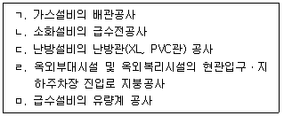
- ㄱ, ㄷ
- ㄱ, ㅁ
- ㄴ, ㄹ
- ㄴ, ㅁ
- ㄷ, ㄹ
(정답률: 알수없음)
52. 급수방식을 비교한 내용으로 옳지 않은 것은?
- 수도직결방식은 고가수조방식에 비해 수질오염 가능성이 낮다.
- 수도직결방식은 압력수조방식에 비해 기계실 면적이 작다.
- 펌프직송방식은 고가수조방식에 비해 옥상탱크 면적이 크다.
- 고가수조방식은 수도직결방식에 비해 수도 단수시 유리하다.
- 압력수조방식은 수도직결방식에 비해 유지관리 측면에서 불리하다.
(정답률: 알수없음)
53. 주택법령상 사업주체가 보수책임을 부담하는 시설공사별 하자담보책임기간으로 가장 긴 것은?
- 옥외급수ㆍ위생 관련 공사 중 옥외급수 관련 공사
- 창호공사 중 창문틀 및 문짝공사
- 지붕 및 방수공사 중 방수공사
- 난방ㆍ환기, 공기조화설비공사 중 보온공사
- 급ㆍ배수위생설비공사 중 배수ㆍ통기설비공사
(정답률: 알수없음)
54. 펌프에 관한 설명으로 옳지 않은 것은?
- 양수량은 회전수에 비례한다.
- 축동력은 회전수의 세제곱에 비례한다.
- 전양정은 회전수의 제곱에 비례한다.
- 2대의 펌프를 직렬운전하면 토출량은 2배가 된다.
- 실양정은 흡수면으로부터 토출수면까지의 수직거리이다.
(정답률: 알수없음)
55. 배관계통에서 마찰손실을 같게 하여 균등한 유량이 공급되도록 하는 배관방식은?
- 이관식 배관
- 하트포드 배관
- 리턴콕 배관
- 글로브 배관
- 역환수 배관
(정답률: 알수없음)
56. 주택건설기준 등에 관한 규칙상 폐쇄회로 텔레비전의 설치 기준에 관한 규정의 일부이다. ( )안에 들어갈 숫자는?
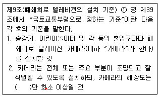
- 21
- 41
- 61
- 81
- 101
(정답률: 알수없음)
57. 환지 방식에 의한 도시개발사업으로 조성된 대지의 활용에 관한 주택법 제26조의 내용이다. ( )안에 공통으로 들어갈 용어를 쓰시오.
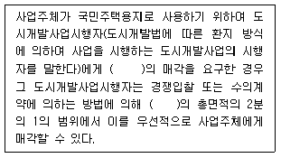
- 정답 : 체비지
- 본 문제는 주관식입니다. 1번을 누르면 정답 처리 됩니다.
- 본 문제는 주관식입니다. 1번을 누르면 정답 처리 됩니다.
- 본 문제는 주관식입니다. 1번을 누르면 정답 처리 됩니다.
- 본 문제는 주관식입니다. 1번을 누르면 정답 처리 됩니다.
(정답률: 알수없음)
58. 주택상환사채의 상환에 관한 주택법 시행령 제101조의 일부 규정이다. ( )안에 들어갈 숫자와 용어를 순서대로 각각 쓰시오.
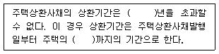
- 정답 : 3, 공급계약체결일
- 본 문제는 주관식입니다. 1번을 누르면 정답 처리 됩니다.
- 본 문제는 주관식입니다. 1번을 누르면 정답 처리 됩니다.
- 본 문제는 주관식입니다. 1번을 누르면 정답 처리 됩니다.
- 본 문제는 주관식입니다. 1번을 누르면 정답 처리 됩니다.
(정답률: 알수없음)
59. 사업계획의 승인에 관한 주택법 시행령 제15조의 일부 내용이다. ( )안에 들어갈 용어를 쓰시오.
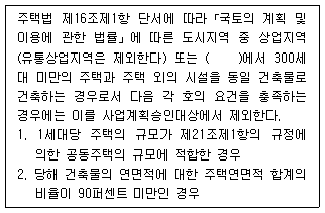
- 정답 : 준주거지역
- 본 문제는 주관식입니다. 1번을 누르면 정답 처리 됩니다.
- 본 문제는 주관식입니다. 1번을 누르면 정답 처리 됩니다.
- 본 문제는 주관식입니다. 1번을 누르면 정답 처리 됩니다.
- 본 문제는 주관식입니다. 1번을 누르면 정답 처리 됩니다.
(정답률: 알수없음)
60. 시공권 있는 등록사업자가 시공할 수 있는 주택의 규모에 관한 주택법 시행령 제13조의 일부 규정이다. ( )안에 들어갈 숫자를 순서대로 각각 쓰시오.
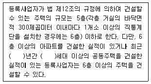
- 정답 : 3, 300
- 본 문제는 주관식입니다. 1번을 누르면 정답 처리 됩니다.
- 본 문제는 주관식입니다. 1번을 누르면 정답 처리 됩니다.
- 본 문제는 주관식입니다. 1번을 누르면 정답 처리 됩니다.
- 본 문제는 주관식입니다. 1번을 누르면 정답 처리 됩니다.
(정답률: 알수없음)
61. 이익금과 손실금의 처리에 관한 주택법 제66조의 일부 내용이다. ( )안에 들어갈 용어를 쓰시오.
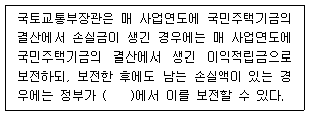
- 정답 : 일반회계
- 본 문제는 주관식입니다. 1번을 누르면 정답 처리 됩니다.
- 본 문제는 주관식입니다. 1번을 누르면 정답 처리 됩니다.
- 본 문제는 주관식입니다. 1번을 누르면 정답 처리 됩니다.
- 본 문제는 주관식입니다. 1번을 누르면 정답 처리 됩니다.
(정답률: 알수없음)
62. 전매행위 제한기간에 관한 주택법 시행령 제45조의2의 일부 내용이다. ( )안에 들어갈 숫자를 순서대로 각각 쓰시오.
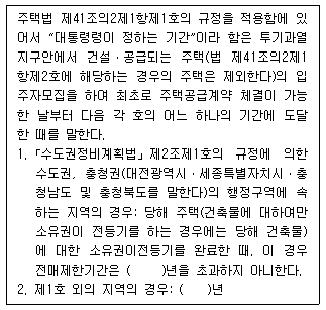
- 정답 : 5, 1
- 본 문제는 주관식입니다. 1번을 누르면 정답 처리 됩니다.
- 본 문제는 주관식입니다. 1번을 누르면 정답 처리 됩니다.
- 본 문제는 주관식입니다. 1번을 누르면 정답 처리 됩니다.
- 본 문제는 주관식입니다. 1번을 누르면 정답 처리 됩니다.
(정답률: 알수없음)
63. 건축물의 철거 등의 신고에 관한 건축법 제36조의 내용이다. ( )안에 들어갈 숫자와 용어를 순서대로 각각 쓰시오.
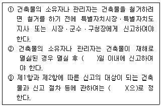
- 정답 : 30, 국토교통부령
- 본 문제는 주관식입니다. 1번을 누르면 정답 처리 됩니다.
- 본 문제는 주관식입니다. 1번을 누르면 정답 처리 됩니다.
- 본 문제는 주관식입니다. 1번을 누르면 정답 처리 됩니다.
- 본 문제는 주관식입니다. 1번을 누르면 정답 처리 됩니다.
(정답률: 알수없음)
64. 건축물의 구조 및 재료 등에 관한 건축법 제48조의2의 규정이다. ( )안에 들어갈 용어를 쓰시오.
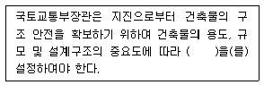
- 정답 : 내진등급
- 본 문제는 주관식입니다. 1번을 누르면 정답 처리 됩니다.
- 본 문제는 주관식입니다. 1번을 누르면 정답 처리 됩니다.
- 본 문제는 주관식입니다. 1번을 누르면 정답 처리 됩니다.
- 본 문제는 주관식입니다. 1번을 누르면 정답 처리 됩니다.
(정답률: 알수없음)
4과목: 공동주택관리실무(주관식)
65. 건축법 제1조의 규정이다. ( )안에 들어갈 용어를 각각 쓰시오.
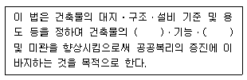
- 정답 : 안전, 환경(환경, 안전)
- 본 문제는 주관식입니다. 1번을 누르면 정답 처리 됩니다.
- 본 문제는 주관식입니다. 1번을 누르면 정답 처리 됩니다.
- 본 문제는 주관식입니다. 1번을 누르면 정답 처리 됩니다.
- 본 문제는 주관식입니다. 1번을 누르면 정답 처리 됩니다.
(정답률: 알수없음)
66. 건축법 제2조(정의)에서 다음 설명에 해당하는 용어를 쓰시오.
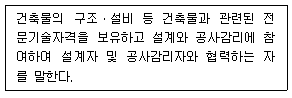
- 정답 : 관계전문기술자
- 본 문제는 주관식입니다. 1번을 누르면 정답 처리 됩니다.
- 본 문제는 주관식입니다. 1번을 누르면 정답 처리 됩니다.
- 본 문제는 주관식입니다. 1번을 누르면 정답 처리 됩니다.
- 본 문제는 주관식입니다. 1번을 누르면 정답 처리 됩니다.
(정답률: 알수없음)
67. 부도임대주택등의 임차인대표회의에 관한 임대주택법 제30조의 내용이다. ( )안에 들어갈 용어를 쓰시오.
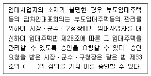
- 정답 : 임대주택분쟁조정위원회
- 본 문제는 주관식입니다. 1번을 누르면 정답 처리 됩니다.
- 본 문제는 주관식입니다. 1번을 누르면 정답 처리 됩니다.
- 본 문제는 주관식입니다. 1번을 누르면 정답 처리 됩니다.
- 본 문제는 주관식입니다. 1번을 누르면 정답 처리 됩니다.
(정답률: 알수없음)
68. 소방시설 설치ㆍ유지 및 안전관리에 관한 법률 시행령 제2조 및 제23조에 관한 내용이다. ( )안에 들어갈 용어와 숫자를 순서대로 각각 쓰시오.
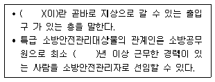
- 정답 : 피난층, 20
- 본 문제는 주관식입니다. 1번을 누르면 정답 처리 됩니다.
- 본 문제는 주관식입니다. 1번을 누르면 정답 처리 됩니다.
- 본 문제는 주관식입니다. 1번을 누르면 정답 처리 됩니다.
- 본 문제는 주관식입니다. 1번을 누르면 정답 처리 됩니다.
(정답률: 알수없음)
69. 주택법령상 관리비등의 사업계획 및 예산안 수립 등에 관한 내용이다. ( )안에 들어갈 숫자를 순서대로 각각 쓰시오.
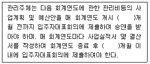
- 정답 : 1, 2
- 본 문제는 주관식입니다. 1번을 누르면 정답 처리 됩니다.
- 본 문제는 주관식입니다. 1번을 누르면 정답 처리 됩니다.
- 본 문제는 주관식입니다. 1번을 누르면 정답 처리 됩니다.
- 본 문제는 주관식입니다. 1번을 누르면 정답 처리 됩니다.
(정답률: 알수없음)
70. 주택법령상 공동주택관리분쟁조정위원회의 구성에 관한 규정의 일부이다. ( )안에 들어갈 숫자를 순서대로 각각 쓰시오.
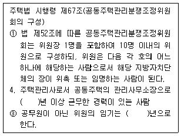
- 정답 : 5, 3
- 본 문제는 주관식입니다. 1번을 누르면 정답 처리 됩니다.
- 본 문제는 주관식입니다. 1번을 누르면 정답 처리 됩니다.
- 본 문제는 주관식입니다. 1번을 누르면 정답 처리 됩니다.
- 본 문제는 주관식입니다. 1번을 누르면 정답 처리 됩니다.
(정답률: 알수없음)
71. 주택법상 대통령령으로 정하는 규모 이상으로 다음의 주택임대관리업을 하려는 자는 등록을 하여야 한다. 같은 법 시행령 제69조의2 제1항의 규정에 따라 ( )안에 들어갈 숫자를 순서대로 각각 쓰시오.
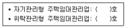
- 정답 : 100, 300
- 본 문제는 주관식입니다. 1번을 누르면 정답 처리 됩니다.
- 본 문제는 주관식입니다. 1번을 누르면 정답 처리 됩니다.
- 본 문제는 주관식입니다. 1번을 누르면 정답 처리 됩니다.
- 본 문제는 주관식입니다. 1번을 누르면 정답 처리 됩니다.
(정답률: 알수없음)
72. 남녀고용평등과 일ㆍ가정 양립지원에 관한 법률상 배우자 출산휴가에 관한 내용이다. ( )안에 들어갈 숫자를 순서대로 각각 쓰시오.
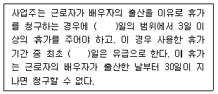
- 정답 : 5, 3
- 본 문제는 주관식입니다. 1번을 누르면 정답 처리 됩니다.
- 본 문제는 주관식입니다. 1번을 누르면 정답 처리 됩니다.
- 본 문제는 주관식입니다. 1번을 누르면 정답 처리 됩니다.
- 본 문제는 주관식입니다. 1번을 누르면 정답 처리 됩니다.
(정답률: 알수없음)
73. 근로기준법상 여성의 시간외근로에 관한 규정이다. ( )안에 들어갈 내용을 순서대로 각각 쓰시오.
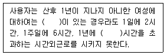
- 정답 : 단체협약, 150
- 본 문제는 주관식입니다. 1번을 누르면 정답 처리 됩니다.
- 본 문제는 주관식입니다. 1번을 누르면 정답 처리 됩니다.
- 본 문제는 주관식입니다. 1번을 누르면 정답 처리 됩니다.
- 본 문제는 주관식입니다. 1번을 누르면 정답 처리 됩니다.
(정답률: 알수없음)
74. 다음 조건의 공동주택에서 공급면적이 80•인 세대의 월간 세대별 장기수선충당금을 구하시오. (단, 연간수선비는 매년 일정하다고 가정함)
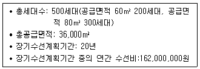
- 정답 : 30,000(원)
- 본 문제는 주관식입니다. 1번을 누르면 정답 처리 됩니다.
- 본 문제는 주관식입니다. 1번을 누르면 정답 처리 됩니다.
- 본 문제는 주관식입니다. 1번을 누르면 정답 처리 됩니다.
- 본 문제는 주관식입니다. 1번을 누르면 정답 처리 됩니다.
(정답률: 알수없음)
75. 급수배관 설계ㆍ시공상의 유의사항에 관한 내용이다. ( )에 들어갈 용어를 쓰시오.
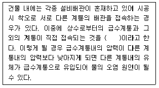
- 정답 : 크로스커넥션
- 본 문제는 주관식입니다. 1번을 누르면 정답 처리 됩니다.
- 본 문제는 주관식입니다. 1번을 누르면 정답 처리 됩니다.
- 본 문제는 주관식입니다. 1번을 누르면 정답 처리 됩니다.
- 본 문제는 주관식입니다. 1번을 누르면 정답 처리 됩니다.
(정답률: 알수없음)
76. 전기설비 용량이 각각 80kW, 100kW, 120kW의 부하설비가 있다. 이때 수용률(수요율)을 80%로 가정할 경우 최대수요전력(kW)을 구하시오.
- 정답 : 240
- 본 문제는 주관식입니다. 1번을 누르면 정답 처리 됩니다.
- 본 문제는 주관식입니다. 1번을 누르면 정답 처리 됩니다.
- 본 문제는 주관식입니다. 1번을 누르면 정답 처리 됩니다.
- 본 문제는 주관식입니다. 1번을 누르면 정답 처리 됩니다.
(정답률: 알수없음)
77. 소방시설 설치ㆍ유지 및 안전관리에 관한 법률상 소방시설에 관한 정의이다. ( )안에 들어갈 용어를 쓰시오.
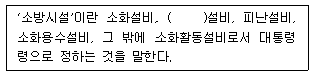
- 정답 : 경보
- 본 문제는 주관식입니다. 1번을 누르면 정답 처리 됩니다.
- 본 문제는 주관식입니다. 1번을 누르면 정답 처리 됩니다.
- 본 문제는 주관식입니다. 1번을 누르면 정답 처리 됩니다.
- 본 문제는 주관식입니다. 1번을 누르면 정답 처리 됩니다.
(정답률: 알수없음)
78. 급탕설비에서 물 20kg을 15℃에서 65℃로 가열하는데 필요한 열량(kJ)을 구하시오. (단, 물의 비열은 4.2 kJ/kgㆍK)
- 정답 : 4,200
- 본 문제는 주관식입니다. 1번을 누르면 정답 처리 됩니다.
- 본 문제는 주관식입니다. 1번을 누르면 정답 처리 됩니다.
- 본 문제는 주관식입니다. 1번을 누르면 정답 처리 됩니다.
- 본 문제는 주관식입니다. 1번을 누르면 정답 처리 됩니다.
(정답률: 알수없음)
79. 배수통기설비의 통기관에 관한 설명이다. ( )안에 들어갈 용어를 쓰시오.
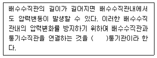
- 정답 : 결합
- 본 문제는 주관식입니다. 1번을 누르면 정답 처리 됩니다.
- 본 문제는 주관식입니다. 1번을 누르면 정답 처리 됩니다.
- 본 문제는 주관식입니다. 1번을 누르면 정답 처리 됩니다.
- 본 문제는 주관식입니다. 1번을 누르면 정답 처리 됩니다.
(정답률: 알수없음)
80. 소음ㆍ진동관리법령상 생활소음 규제기준에 관한 내용이다. ( )안에 들어갈 숫자 ① 과 ②를 순서대로 각각 쓰시오.
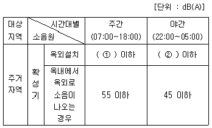
- 정답 : 65, 60
- 본 문제는 주관식입니다. 1번을 누르면 정답 처리 됩니다.
- 본 문제는 주관식입니다. 1번을 누르면 정답 처리 됩니다.
- 본 문제는 주관식입니다. 1번을 누르면 정답 처리 됩니다.
- 본 문제는 주관식입니다. 1번을 누르면 정답 처리 됩니다.
(정답률: 알수없음)